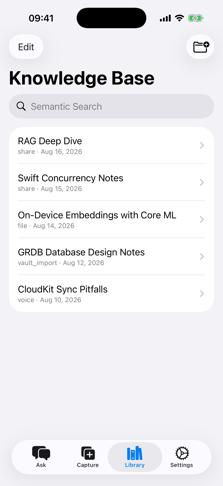
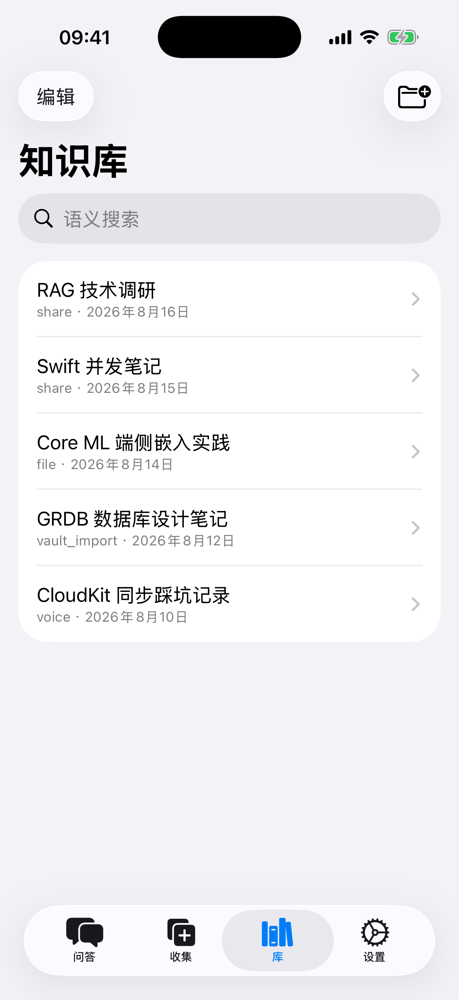
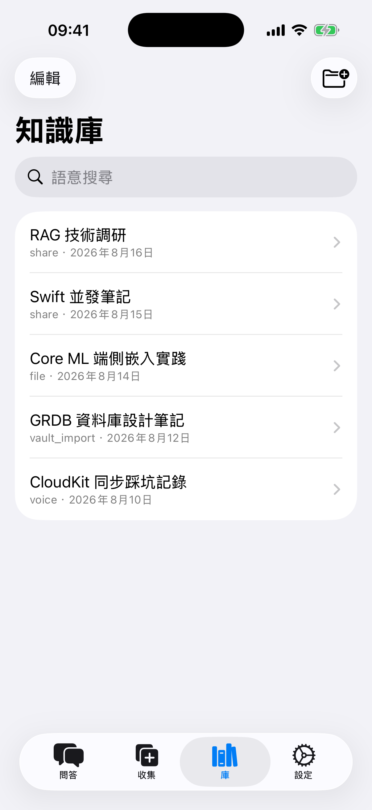
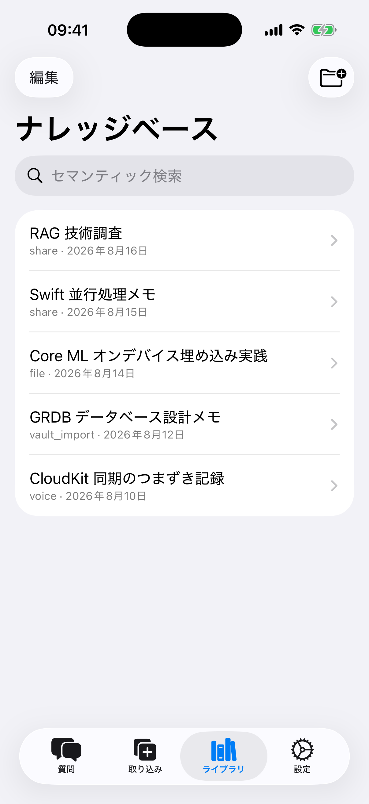

KnowledgeBrain
Your local-first AI second brain
Collect text, voice memos, PDFs, e-books and web clippings into one searchable knowledge base — then just ask it questions. Every answer comes with citations you can trace back to the source. Your data lives on your devices and in your own iCloud, nowhere else.
What it does
Capture everything
Quick text notes, voice memos (transcribed on-device), PDF / EPUB / Markdown import, photo OCR, Obsidian vault import, and one-tap saving from any app via the share sheet.
Ask, don't dig
Ask questions in plain language. Answers are built from your own library, with [1] [2] citation chips you can tap to read the original passage.
Private by design
Vector search, speech transcription and OCR all run on your device. On devices with Apple Intelligence, answers can be generated entirely on-device too.
Bring your own key
Connect DeepSeek, Zhipu, Kimi, OpenRouter and more with your own API key. Keys stay in the iOS Keychain and go only to the provider you choose.
Finds by meaning
Semantic search finds notes by what they mean, not just exact keywords. AI-generated summaries and tags keep a growing library tidy.
Yours, synced, exportable
iCloud syncs your library across devices through your private database. One tap exports everything as Markdown to iCloud Drive — never locked in.
Screenshots



No account, no tracking
There is no sign-up, no analytics, no ads. Your knowledge base exists only on your devices and in your private iCloud database — the developer cannot see it. Read the Privacy Policy for details.
- Beginner's guide
Step-by-step: capture, ask, search, set up an API key, sync and export.
- Privacy Policy
What we do not collect, where your data lives, optional BYOK.
- Terms of Use
License, purchases, your content, and optional cloud AI.
KnowledgeBrain
本地优先的 AI 第二大脑
把散落的文字、语音、PDF、电子书和网页剪藏收进一个可搜索的知识库,然后直接开口提问。每个答案都附带引用来源,可以点回原文核对。数据只存在你的设备和你自己的 iCloud 里。
主要功能
什么都能存
快速文字记录、语音速记(本机转写)、PDF / EPUB / Markdown 导入、相册图片 OCR、Obsidian 库导入,还能通过系统分享面板从任何 App 一键收藏。
直接问,不用翻
用大白话提问,答案基于你自己的知识库生成,末尾的 [1] [2] 引用标记点一下就能看到原文出处。
隐私优先
向量检索、语音转写、OCR 全部在设备本地完成;在支持 Apple Intelligence 的设备上,连答案生成都可以完全不离机。
用自己的 Key
支持 DeepSeek、智谱、Kimi、OpenRouter 等,用你自己的 API Key 和额度。Key 存在系统钥匙串,只发往你配置的服务商。
按意思找东西
语义搜索按含义找笔记,不需要记住精确关键词;AI 自动生成的摘要和标签让知识库越攒越好找。
同步自由,导出自由
通过你的 iCloud 私有数据库跨设备同步;一键把全部内容导出为 Markdown 到 iCloud Drive,永远不被锁定。
界面截图



不注册、不追踪
不需要账号,没有统计埋点,没有广告。你的知识库只存在于你的设备和你的 iCloud 私有数据库,开发者无法查看。详见隐私政策。
KnowledgeBrain
本地優先的 AI 第二大腦
把散落的文字、語音、PDF、電子書和網頁剪藏收進一個可搜尋的知識庫,然後直接開口提問。每個答案都附帶引用來源,可以點回原文核對。資料只存在你的裝置和你自己的 iCloud 裡。
主要功能
什麼都能存
快速文字記錄、語音速記(本機轉寫)、PDF / EPUB / Markdown 匯入、相簿圖片 OCR、Obsidian 庫匯入,還能透過系統分享面板從任何 App 一鍵收藏。
直接問,不用翻
用大白話提問,答案基於你自己的知識庫產生,末尾的 [1] [2] 引用標記點一下就能看到原文出處。
隱私優先
向量檢索、語音轉寫、OCR 全部在裝置本地完成;在支援 Apple Intelligence 的裝置上,連答案產生都可以完全不離機。
用自己的 Key
支援 DeepSeek、智譜、Kimi、OpenRouter 等,用你自己的 API Key 和額度。Key 存在系統鑰匙圈,只發往你設定的服務商。
按意思找東西
語義搜尋按含義找筆記,不需要記住精確關鍵字;AI 自動產生的摘要和標籤讓知識庫越攢越好找。
同步自由,匯出自由
透過你的 iCloud 私有資料庫跨裝置同步;一鍵把全部內容匯出為 Markdown 到 iCloud Drive,永遠不被鎖定。
介面截圖



不註冊、不追蹤
不需要帳號,沒有統計埋點,沒有廣告。你的知識庫只存在於你的裝置和你的 iCloud 私有資料庫,開發者無法查看。詳見隱私權政策。
KnowledgeBrain
ローカルファーストな AI セカンドブレイン
散らばったテキスト、音声、PDF、電子書籍、Web クリップを一つの検索できる知識ベースに集めて、そのまま質問できます。すべての回答には原文に遡れる引用が付きます。データはあなたのデバイスと自分の iCloud にだけ保存されます。
主な機能
何でも取り込める
テキストメモ、音声メモ(オンデバイスで文字起こし)、PDF / EPUB / Markdown の読み込み、写真 OCR、Obsidian Vault の読み込み、共有シートから他アプリの内容をワンタップ保存。
探すより、聞く
自然な言葉で質問するだけ。回答はあなたの知識ベースから生成され、末尾の [1] [2] の引用チップをタップすれば原文の該当箇所を確認できます。
プライバシー第一
ベクトル検索、音声認識、OCR はすべてデバイス上で動作。Apple Intelligence 搭載デバイスでは回答生成まで完全にオンデバイスで行えます。
自分の API キーで
DeepSeek、Zhipu、Kimi、OpenRouter などに自分のキーで接続。キーは iOS キーチェーンに保存され、設定したプロバイダーにだけ送信されます。
意味で見つかる
セマンティック検索はキーワードではなく意味でノートを探します。AI が生成する要約とタグで、増え続けるライブラリも整理されたまま。
同期もエクスポートも自由
プライベートな iCloud データベースでデバイス間同期。ワンタップで全内容を Markdown として iCloud Drive にエクスポート — ロックインはありません。
スクリーンショット



アカウント不要、トラッキングなし
サインアップも分析も広告もありません。知識ベースはあなたのデバイスとプライベートな iCloud データベースにのみ存在し、開発者は閲覧できません。詳しくはプライバシーポリシーをご覧ください。
- 初心者ガイド
取り込み、質問、検索、API キー設定、同期とエクスポートを順番に解説。
- プライバシーポリシー
収集しないデータ、保存場所、任意の BYOK。
- 利用規約
ライセンス、購入、コンテンツ、任意のクラウド AI。